스펙업
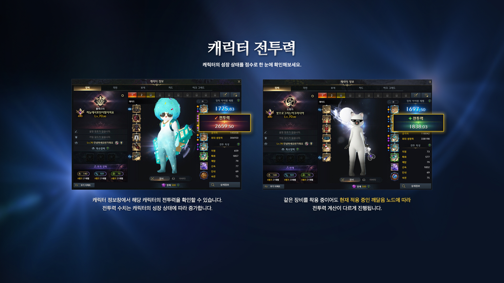
로스트아크의 스펙업 요소들입니다. 작성 순서가 스펙업 우선 순위가 아닙니다. 우선 순위와 효율은 매 순간 달라지기 때문에 본인에 맞는 스펙업을 찾아서 하셔야 합니다.
스펙업 순서
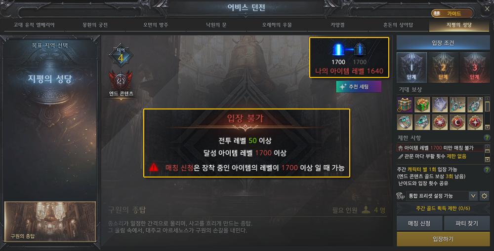
로아는 레이드 입장 조건을 아이템 레벨로 설정하고 있습니다. 그래서 아이템 레벨만 넘으면 입장이 가능한데 클리어가 가능한건 아닙니다.
시즌2까지는 아이템 레벨을 제외한 스펙업 요소가 많지 않아서 아이템 레벨만 봐도 충분했지만 시즌3는 아이템 레벨만으로는 제대로된 스펙을 보는게 힘들어졌고 전투력이라는 시스템이 나오게 됐습니다.
근데 문제는 아직도 입장 조건은 아이템 레벨이라서 결국 레이드에 가기 위해선 아이템 레벨을 제일 먼저 맞춰야 합니다. 결국 1순위는 아이템 레벨입니다.
그 다음은 효율 순으로 가게 되는데 외부 사이트에서 쉽게 확인이 가능합니다.


이런 외부 사이트들에서 본인의 현재 캐릭터에 최적화된 스펙업 순서들을 쉽게 찾을 수 있습니다.
저 사이트 외에도 스펙업 관련 정보를 제공하는 사이트들이 많으니 외부 사이트 이용해서 효율적으로 스펙업하시면 되겠습니다.
재련
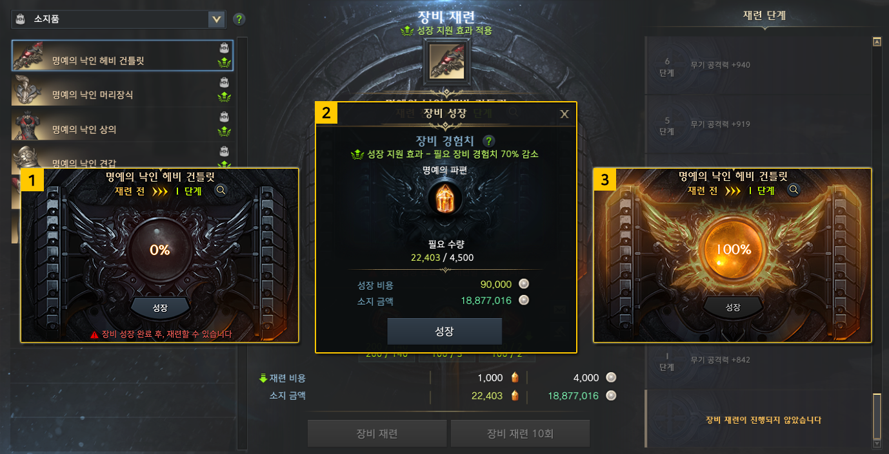
재련은 장비 아이템의 성장을 통해 아이템 레벨과 능력을 향상시킬 수 있는 성장의 핵심 시스템 중 하나입니다.
로아의 모든 레이드는 '전투력'이 아닌 '아이템 레벨'을 기준으로 입장이 가능합니다. 그렇기 때문에 레이드에 가기 위해서는 장비 재련을 최우선으로 하셔야 합니다.
재련 재료 수급처
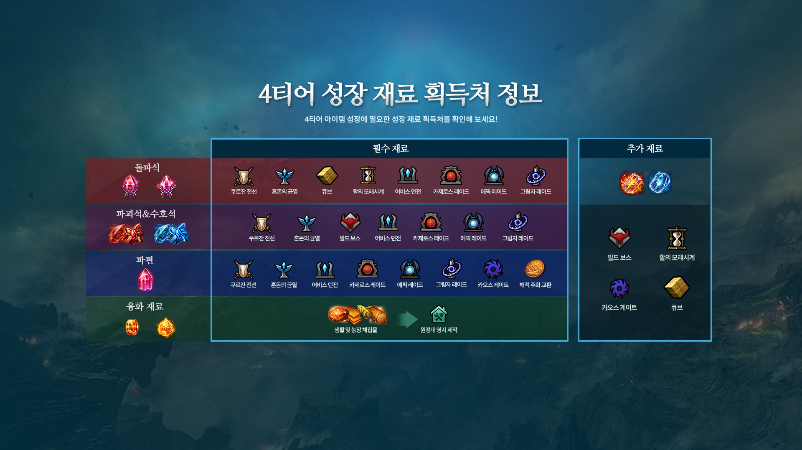
대부분의 PVE 컨텐츠에서 획득이 가능합니다.
싱글 상점 주간 교환

싱글 상점에서 클리어 메달을 사용해 다양한 재련 재료를 구매할 수 있습니다.
클리어 메달은 싱글 모드가 있는 레이드를 난이도 상관없이 클리어 시 받을 수 있습니다.
효율적인 재련 방법과 순서
로스트아크에는 거래 가능한 재료와 귀속 재료가 나뉘어져있고 거래 가능 재료의 가격이 계속 변하기 때문에 효율적인 재련 순서나 방법이 매번 바뀌게 됩니다.
보조 재료인 숨결이나 책을 사용하는 것이 이득일 때도 있고 오히려 손해인 경우도 있습니다.
일반 재련보다 상급 재련을 먼저하는게 목표레벨 달성이 쉬운 구간이 있고 반대로 상급 재련이 일반 재련보다 효율적인 구간도 있습니다.
매번 재련 효율이 다르기 때문에 효율적인 재련 방법을 찾아서 재련을 하는게 좋은데 외부 사이트들을 사용하면 쉽게 찾을 수 있습니다.

특수 재련
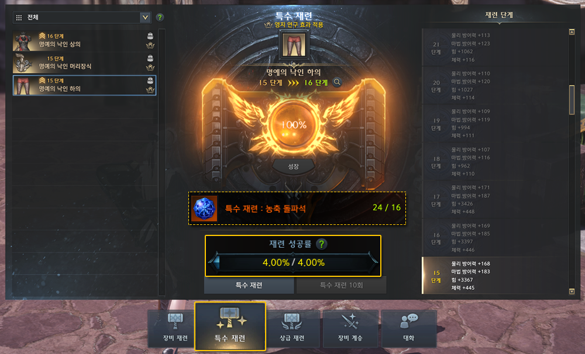
특수 재련은 기존 재료를 쓰지 않고 특수 재련 재료만을 사용하여 재련을 하는 방식입니다.
기존 재련 재료가 들어가지 않기 때문에 골드가 많이 필요없고 대신 장인의 기운은 오르지 않습니다.
특수 재련 재료는 레이드 클리어시 얻거나 낙원 지옥 콘텐츠에서 랜덤하게 얻을 수 있습니다.
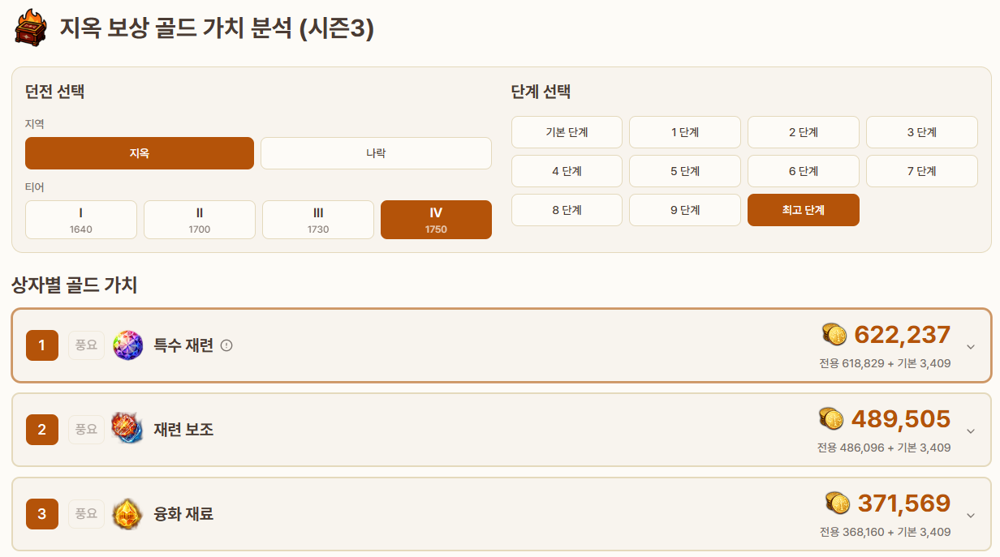
지옥이 특수 재련의 핵심입니다.
특수 재련은 원래 레이드에서 재료가 많이 나오지 않아서 붙으면 좋고 아니면 말고 수준이였습니다.
하지만 낙원이 나오면서 지옥에서 특수 재련 재료를 획득할 수 있게 되었고 부캐릭터의 경우 특수 재련 재료 만으로도 1700 이상을 찍는게 가능해졌습니다.
지옥 보상 중 '특수 재련' 보상이 효율이 매우 좋으니 필요하다면 선택해서 사용하시면 좋겠습니다.
상급 재련
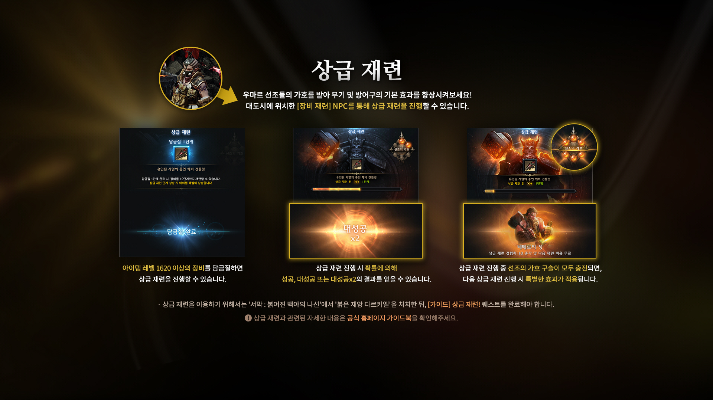
상급 재련은 일반 재련과 다른 방식으로 진행되는 재련입니다.
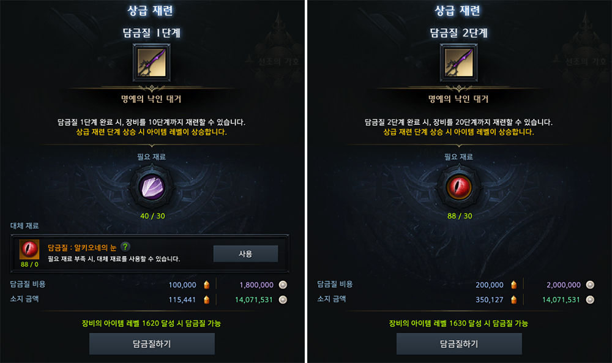
상급 재련을 하기 위해서는 먼저 담금질이 필요한데 10단계와 20단계를 하기 위해서는 카제로스 레이드 서막 클리어 보상이 필요하고 30단계와 40단계를 위해서는 3막 클리어 보상이 필요합니다.
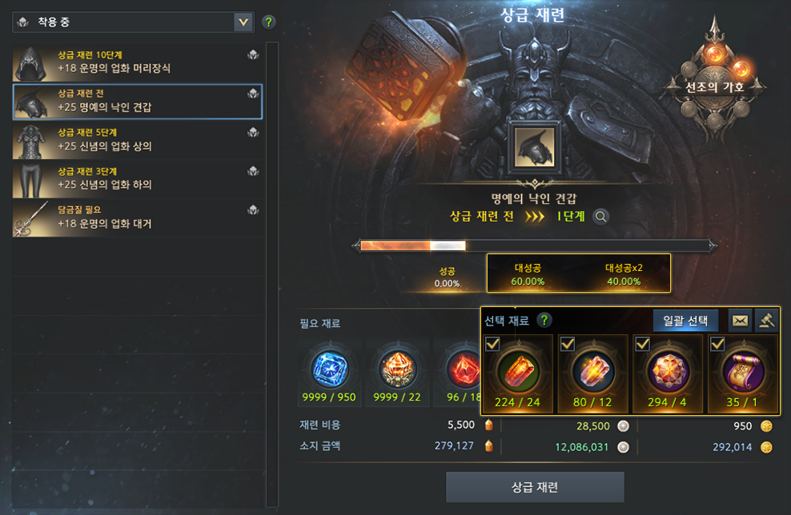
상급 재련은 확률에 의해 성공 / 대성공 / 대성공x2 의 결과를 얻을 수 있는대 보조 재료와 재봉술/야금술을 사용해 대성공/대성공x2 의 확률을 올릴 수 있습니다.
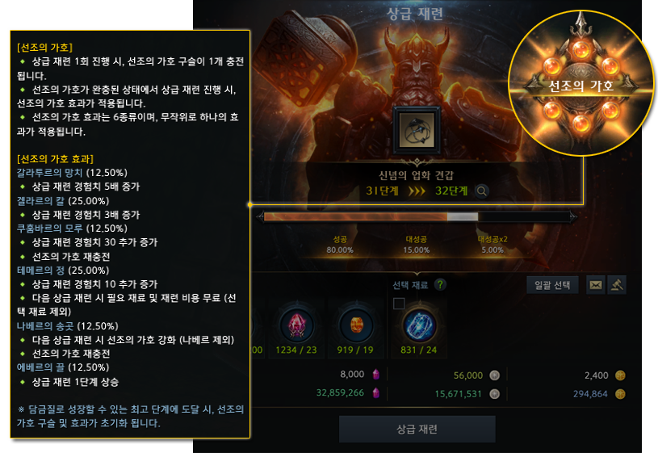
상급 재련을 3번 진행하면 선조의 가호를 받을 수 있습니다. 확률에 따라 추가 효과가 발동되는데 테메르의 정을 제외한 효과들이 모두 좋아서 가능하다면 선조의 가호 턴에는 추가 재료를 넣어주시는게 좋습니다.
선택 재료
숨결, 야금술/재봉술의 가격이 항상 변하기 때문에 추가 재료를 넣는게 좋을때도 있고 넣지 않는게 더 좋을때도 있습니다.
어떤 추가 재료를 어느 타이밍에 사용하는게 좋은지는 외부 사이트에서 쉽게 확인할 수 있습니다


이런 사이트들에서 본인이 가지고 있는 귀속 재화를 입력하고 최적의 효율을 찾아서 상급재련을 진행하시면 됩니다.
각인
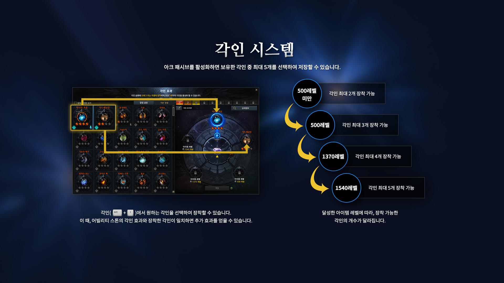
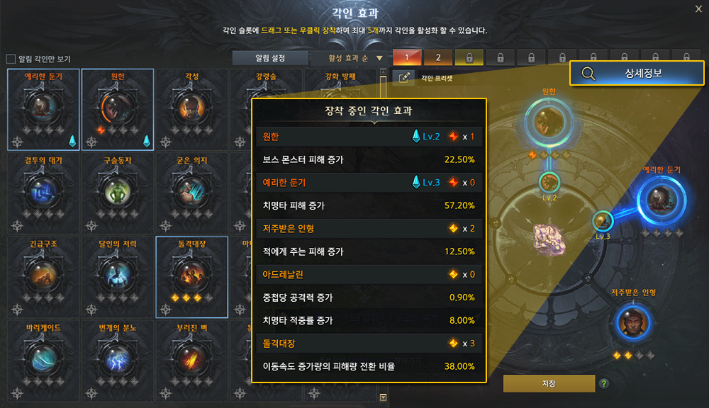
각인은 전투와 관련된 다양한 효과를 얻을 수 있는 시스템으로 원정대 단위로 공유됩니다.
각인 및 어빌리티 스톤을 장착하여 활성화 할 수 있습니다.
습득한 각인들 중 원하는 각인을 선택해서 최대 5개를 장착하게 되는데 각인은 습득한 각인서의 등급에 따라 전설/유물 등급으로 나뉘게 됩니다.
각인서는 5장 습득마다 1단계씩 활성화되며 전설 각인서 20장(전설 4단계)을 읽으면 유물 각인서를 읽는게 가능해집니다.
유물 각인서도 마찬가지로 최대 20장을 읽을 수 있는데 가격이 상당히 비쌉니다. 진짜 많이 비쌉니다.
본인 스펙업 효율 생각해서 현명하게 구매하시길 바랍니다.
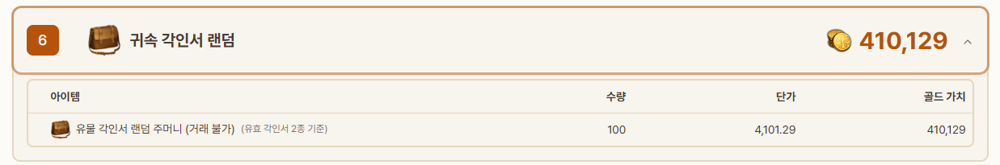
나락에서 보상으로 귀속 랜덤 유물 각인서 상자가 나오기 때문에 최고의 가성비를 노린다면 유물 각인서는 3단계만 활성화하고 나락에서 나오길 기다려도 됩니다.
어빌리티 스톤
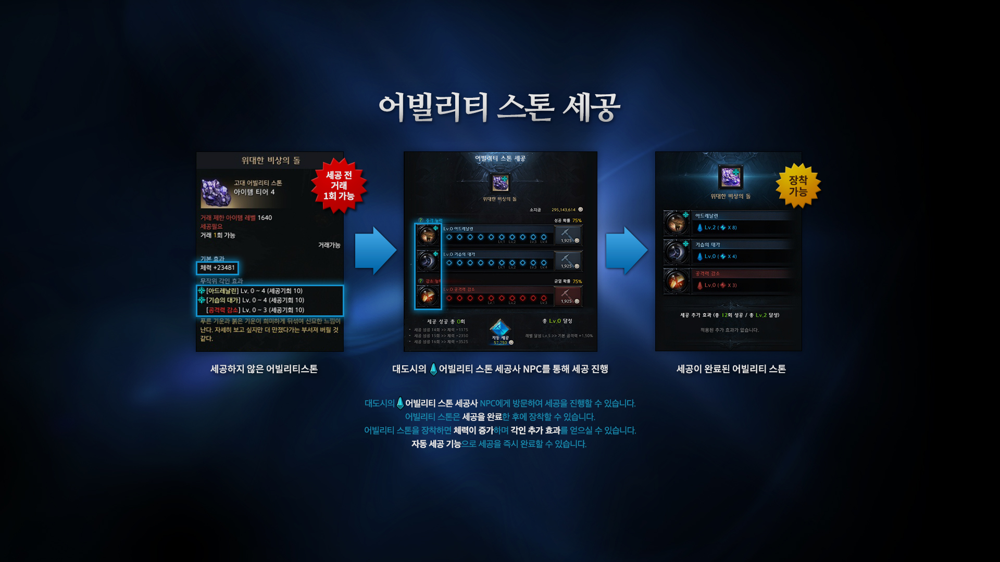
어빌리티 스톤은 각인서와 함께 더 높은 수준의 '각인 효과'를 활성화 시킬 수 있는 아이템입니다.
기본적으로 체력 증가 효과를 제공하며, 어빌리티 스톤 내에 깃들어 있는 각인 효과를 통해 추가 효과를 얻을 수 있습니다.
그러나 모든 능력치를 활성화 할 수 있는 것은 아니며, 활성화 시 감소되는 능력치 역시 함께 깃들어 있기 때문에 정밀한 세공을 필요로 합니다.
세공 성공 6/7/9/10회마다 세공 레벨 1/2/3/4레벨에 해당하는 어빌리티 스톤 효과가 부여됩니다.
97돌
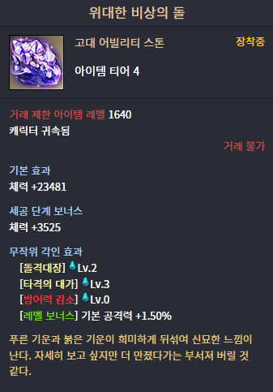
어빌리티 스톤에 부여된 2개의 증가 효과 각인(전투 각인)의 세공 레벨 합이 5 이상이라면 기본 공격력 1.5% 증가 효과가 적용됩니다.
'세공 레벨 합이 5 이상' 이 조건을 만족하는 어빌리티 스톤을 97돌이라고 합니다.
하나가 3단계(9성공), 나머지 하나가 2단계(7성공) 이상인 돌을 말하는데 이게 성공 확률이 굉장히 낮습니다.
자동 세공 확률 공개에 따르면 0.0038% 라고 합니다.
그런데 어빌리티 스톤은 천장이 없습니다.
재련은 장인의 기운이 있고 각인도 20장이 최대고 보석은 10레벨이 끝입니다.
장신구도 상상상이 끝이고 카드도 30각이 끝입니다. 근데 97돌이랑 팔찌는 천장이 없습니다.
진짜 운이 없다면 몇천만원 쓰고도 못깎습니다.
그러니 97돌이랑 팔찌는 마지막에 하셔야 합니다.
공개된 자동 세공 확률표를 보면 세공 레벨 합이
- 5 이상일 확률: 0.13410497373900000000000000%
- 6 이상일 확률: 0.00381178684834200000000000%
- 7 이상일 확률: 0.00001320761073040000000000%
- 8 이상일 확률: 0.00000014983300745100000000%
저 확률에 천장도 없으니까 무리하지말고 천천히 깎으시길 바랍니다.
어빌리티 스톤 지정 키트
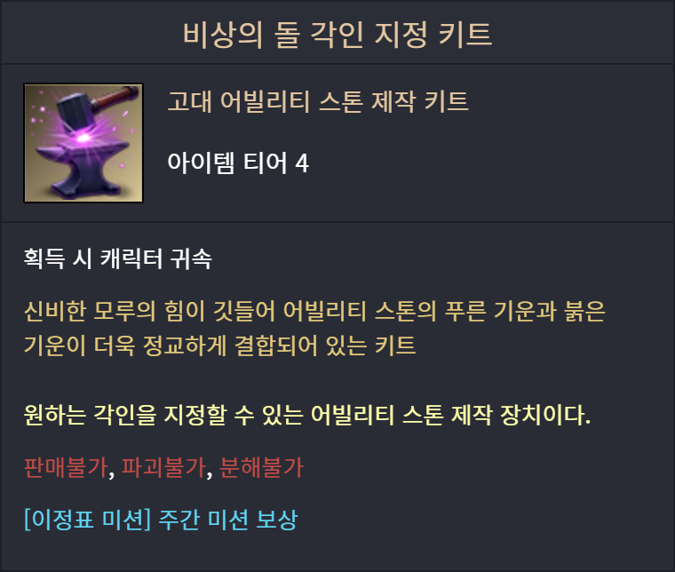
낙원 지옥 보상으로 비상의 돌 각인 지정 키트 를 얻을 수 있습니다.
사용 시 본인이 원하는 돌을 설정해서 얻을 수 있습니다.
돌 깎을때 가장 비싼게 페온입니다.
돌 가격은 이미 바닥이기 때문에 문제가 없는데 돌 살때 사용하는 페온의 가격이 비쌉니다.
그런데 키트를 사용하면 페온값 없이 돌을 구할 수 있기 때문에 만약 97돌을 노릴 생각이시라면 지옥에서 선택지가 나오면 고려할만 합니다.
보석
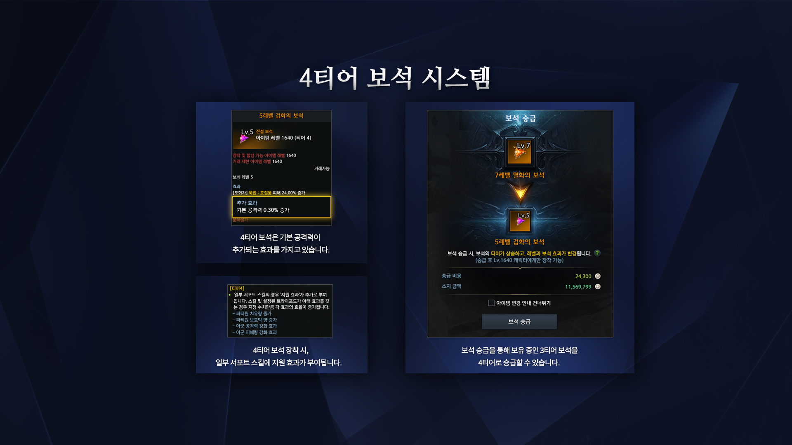
보석은 스킬을 강화해주는 아이템으로 스킬 대미지를 올려주는 겁화 / 쿨타임을 줄여주는 작열 2종류가 있습니다.
보석은 레벨에 따라 효과가 달라지며 10레벨이 최고레벨입니다.
보석은 1개의 스킬만을 강화해주는데 원하는 스킬이 아니라면 실링을 사용해 다른 스킬로 변환이 가능합니다.
보석 조율 광휘의 보석
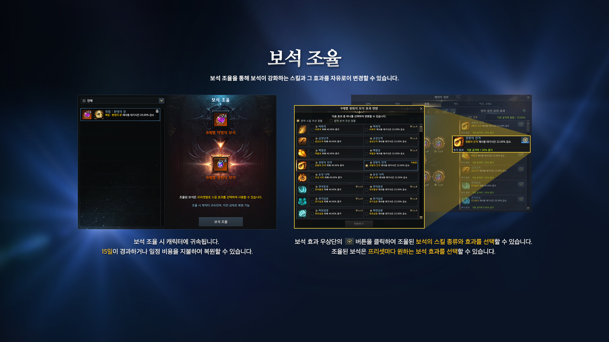
4티어 보석은 광휘의 보석으로 조율이 가능하며 광휘의 보석은 겁화↔작열을 마음대로 바꿀 수 있고 효과 변환도 무료로 가능합니다.
대신 캐릭터 귀속으로 바뀌게 되며 조율을 풀기 위해서는 15일을 기다리거나 크리스탈을 소모해야 합니다.
싱글 상점 6레벨 광휘의 보석
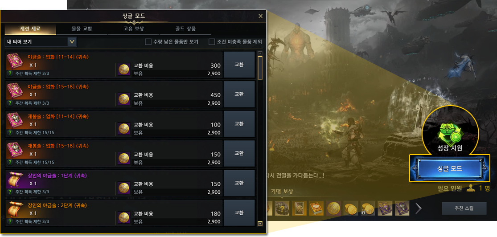
싱글 상점에서 6레벨 광휘의 보석을 구입할 수 있습니다.
일명 협찬 보석인데 로아는 보석이 큰 진입장벽으로 작용하기 때문에 이를 완화하기 위해 나온 정책입니다.
6광휘만 하더라도 다른 스펙업이 충분하다면 대부분의 숙제 콘텐츠가 가능하니까 우선은 6광휘 사용하시다가 상위레벨 보석 구매하시면 됩니다.
골드 상점 7레벨 광휘의 보석
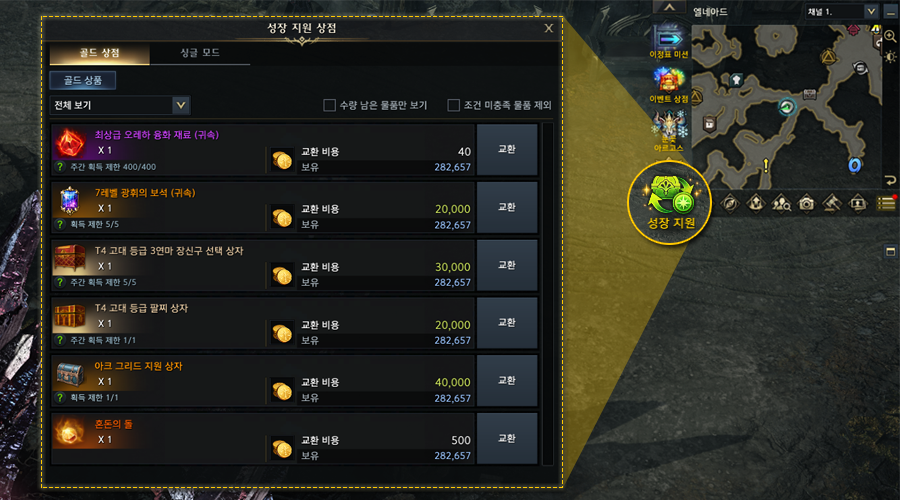
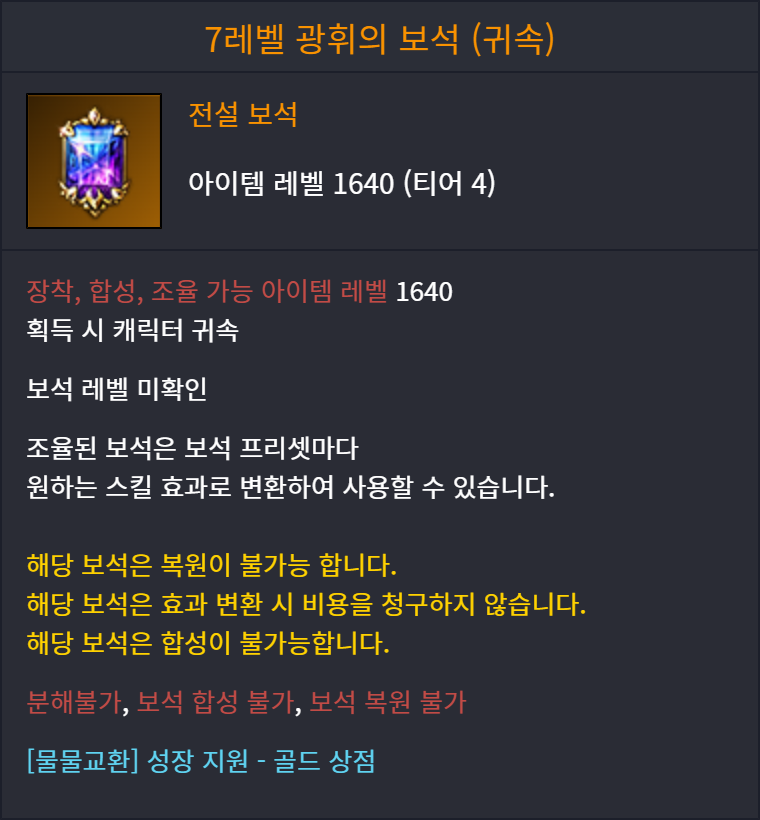
골드 상점에서 7레벨 광휘의 보석 11개를 구매할 수 있습니다.
귀속 골드로 구매가 가능하기 때문에 부캐릭터 육성에 부담이 많이 줄었습니다.
나이스단
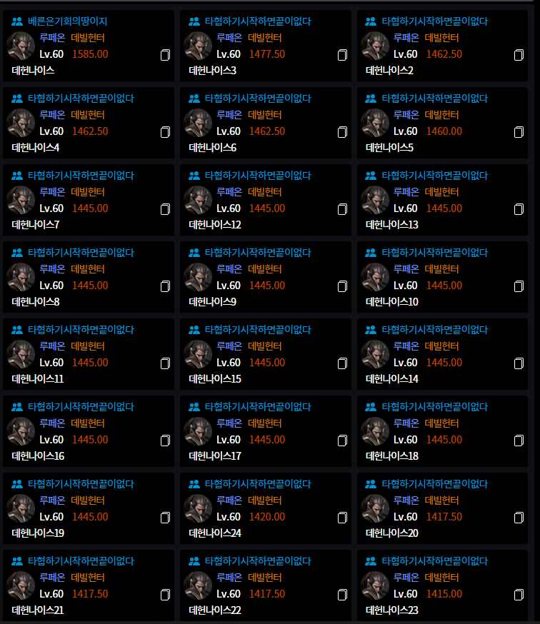
나이스단은 동일 직업을 여러개 키워 보석을 공유하는 원정대 구성을 의미합니다.
어원은 데헌'나이스' 입니다. 참고로 저 사람은 로아 접고 디아블로4 버스광고 하던게 마지막 목격담입니다.
보석은 광휘로 변환하지 않으면 공유가 가능한대 같은 직업이라면 스킬변환 없이 사용이 가능하기 때문에 같은 직업으로만 원정대를 구성해서 보석을 돌려쓰는 사람들을 나이스단이라고 표현합니다.
효율은 정말 좋습니다.
보석을 1세트만 사면 되기 때문에 비나이스단과 비교했을 때 같은 금액으로 더 높은 레벨의 보석을 사용 가능하며 동일 직업이라면 각인도 공유하기 때문에 비나이스단에 비해 더 높은 전투력으로 파티가입도 편하고 숙제도 쉽게 뺄 수 있습니다.
추천을 하냐고 물으시면 효율면에서는 당연히 추천하는게 맞는대 동일 직업으로만 플레이하는게 사람에 따라선 정말 재미없게 느껴지기 때문에 직접적으로 추천드리지는 않습니다.
카드
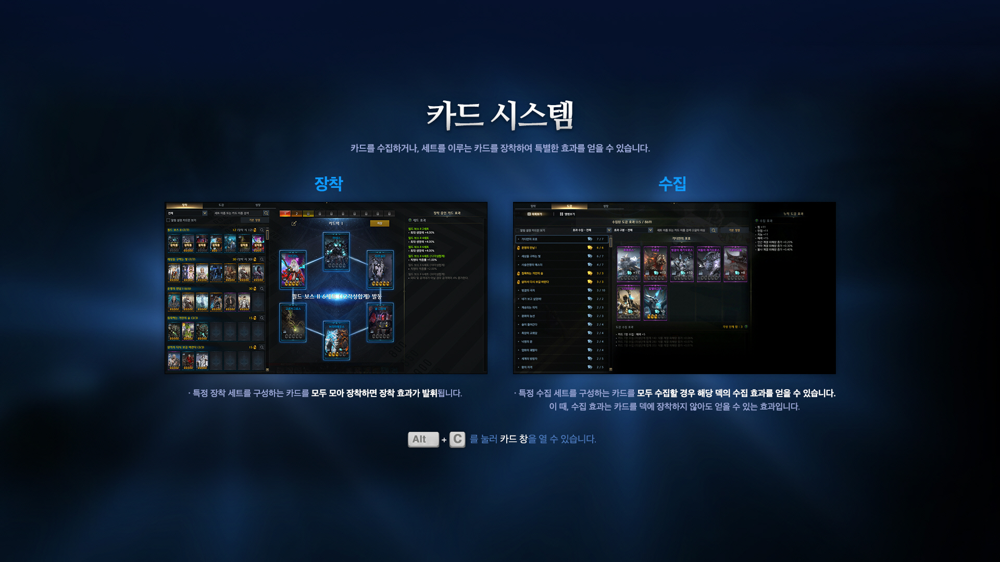
한때 뉴비 절단기 1호였던 시스템입니다.
한 종류의 카드를 16장을 모아 5각성을 하게 되는데 세트효과를 맞추기 위해서는 6개의 5각성 카드가 필요합니다.
가장 많이 쓰이는 세상을 구한 빛, 일명 세구빛 30각을 위해서 80장의 전설 카드가 필요하다는 의미죠.
물론 지금은 익스프레스 진행 시 세구빛 30각을 지원해주기 때문에 큰 문제 없습니다.
세구빛 외에 다른 속성 세트인 암구빛, 토구빛, 화구빛, 뇌구빛, 수구빛 세트가 있는데 뉴비의 영역이 아닙니다.
고인물들의 영역이니까 뉴비들은 천천히 맞추시면 되겠습니다.
어차피 뉴비들이 이거 필요한 레이드 나올 쯤이면 완화해서 맞추기 쉬워질겁니다.
카드 수급처
모험섬
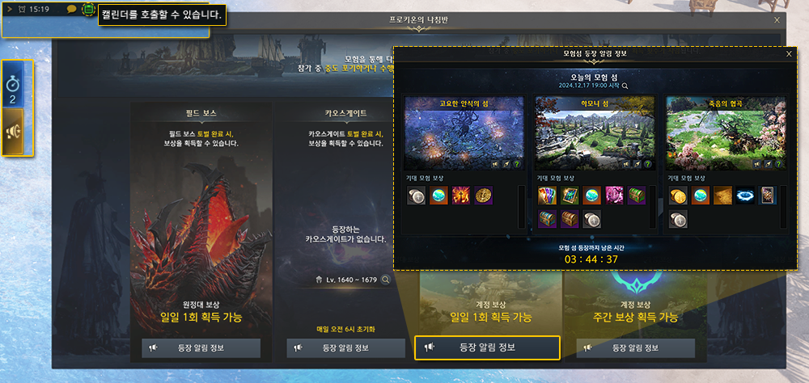
모험섬 보상으로 카드가 들어있습니다. 골드섬이 있는게 아니라면 대부분 카드섬을 갑니다.
카드작
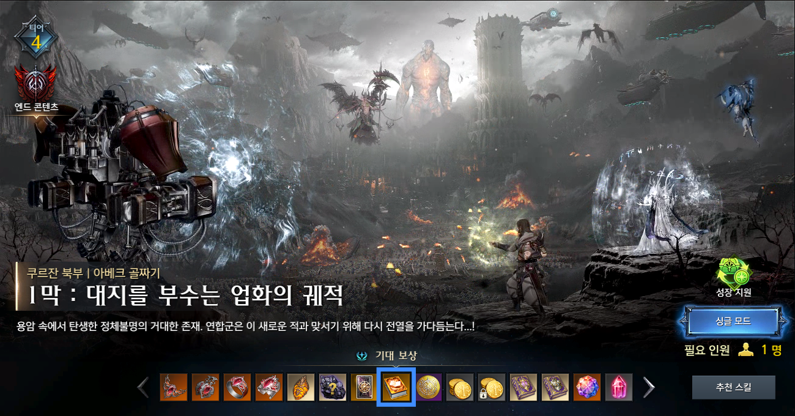
엔드 콘텐츠는 골드 획득 3회 이후부터는 골드는 획득하지 못하지만 다른 보상은 획득이 가능합니다.
전설 카드 역시 획득이 가능한데 이를 이용해 보상으로 카드를 주는 하위 레이드를 도는걸 카드작이라고 합니다.
싱글 모드로 플레이가능한 레이드 위주로 많이 돕니다.
떠돌이 상인
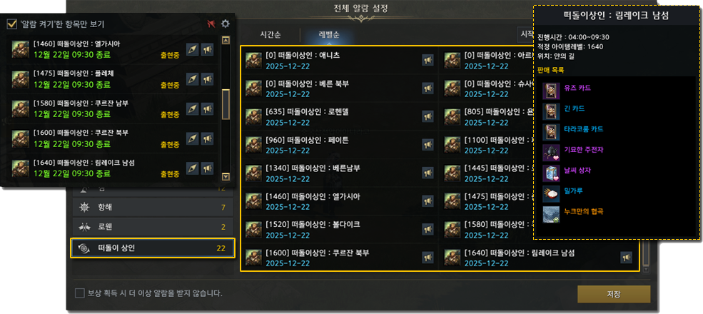
로아에는 떠돌이 상인 NPC가 있습니다
10시~15시 30분 / 16시~21시 30분 / 22시~03시 30분 / 04시~09시 30분에 대륙별로 출현을 하는데 판매 품목중에 카드가 있고 몇몇 대륙의 경우 전설 카드를 판매하기도 합니다.
실링만으로 전설 카드 구매가 가능하기 때문에 대륙별로 판매하는 전설 카드 확인하시고 시간별로 확인해서 필요한 카드 구매하시면 되겠습니다.
| 지역 | 획득 가능 카드 |
|---|---|
| 아르테미스 | 카마인 |
| 루테란 동부 | 데런 아만, 진저웨일, 발탄, 에스더 루테란 |
| 애니츠 | 비아키스, 웨이, 에스더 시엔, 가디언 루 |
| 아르데타인 | 일리아칸 |
| 로헨델 | 아제나&이난나 |
| 욘 | 바훈투르, 에스더 갈라투르 |
| 파푸니카 | 쿠크세이튼, 광기를 잃은 쿠크세이튼 |
| 베른 남부 | 아브렐슈드 |
| 엘가시아 | 베아트리스, 에버그레이스 |
| 볼다이크 | 바르칸 |
| 쿠르잔 북부 | 카멘 |
일회성 수급처
➡️ https://gall.dcinside.com/mgallery/board/view/?id=loaon&no=2459029
위 링크 참고 하시면 좋을것 같습니다.
장신구 연마
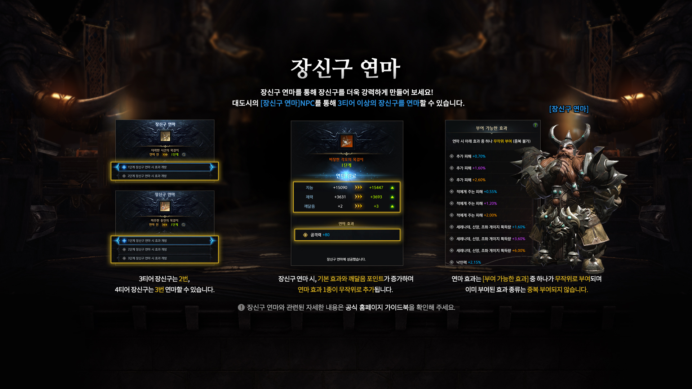
장신구는 연마를 통해 아크 패시브 포인트와 연마 효과를 얻을 수 있습니다.
아크 패시브 포인트는 품질에 따라 부여가 되는데 66 이상이면 최대 포인트가 되니까 크게 신경쓸 필요는 없습니다.
연마 효과는 부위 당 2가지의 유효 옵션이 존재하고 같은 옵션은 중복해서 나오지 않습니다.
각각의 옵션은 상/중/하 3개의 등급이 존재하며 유효 옵션 등급에 따라 하하~상상까지 등급이 구분됩니다.
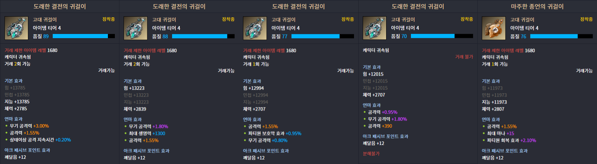
왼쪽부터 상상/상중/상하/중중/상단일 악세로 왼쪽으로 갈수록 성능이 좋습니다.
뉴비들이라면 상하~상단일 정도를 사용하시는게 좋습니다.

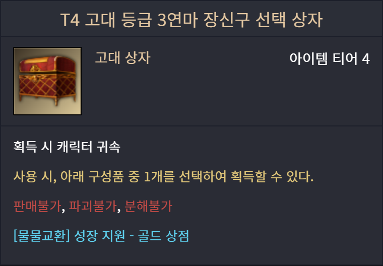
골드 상점에서 장신구를 구매할 수 있습니다.
귀속 골드로 구매가 가능하지만 같은 옵션을 거래소에서 구매할 경우 페온이 들긴 하지만 훨씬 더 싸기 때문에 남는 페온이 있다면 거래소에서 사셔도 됩니다.
저 정도 악세로 초반에 대부분의 컨텐츠가 가능하니까 악세 부담없이 뉴비나 복귀유저가 세팅할 수 있게 됐습니다.
팔찌
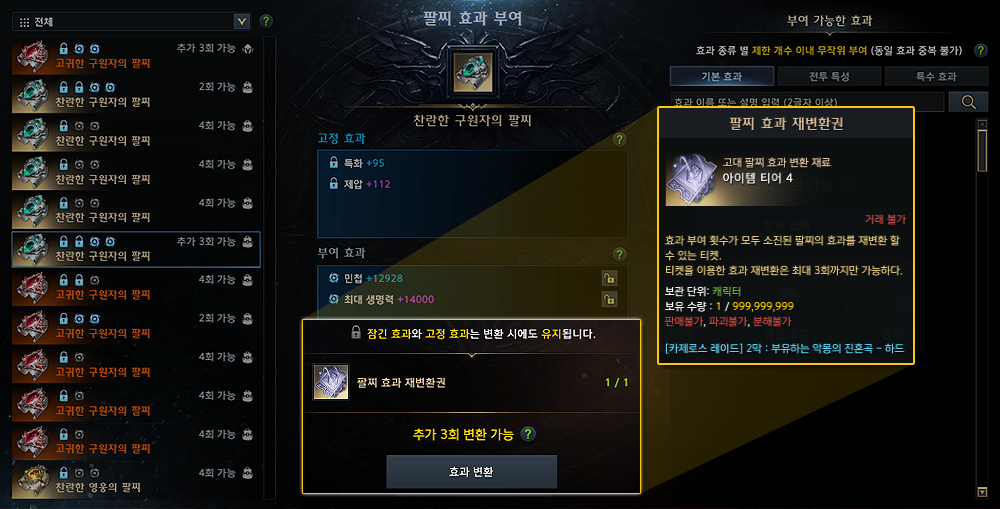
팔찌는 달성 아이템 레벨 1490 이후 부터 획득 및 착용 가능한 장신구 아이템입니다.
팔찌가 보유하고 있는 효과를 통해 전투에 도움이 되는 다양한 스탯, 특성, 특수 효과를 얻을 수 있습니다.
팔찌는 고정 효과와 부여 효과로 구분 됩니다.
고정 효과는 팔찌 습득 시 자동으로 고정되어 있는 효과들로 무작위로 부여되며 변경할 수 없습니다.
부여 효과는 최대 3개까지 부여가 가능하며 팔찌 습득 시 슬롯의 갯수가 랜덤하게 부여됩니다.
슬롯은 NPC를 통해 효과 기본 4회 부여가 가능하고 팔찌 효과 재변환권을 사용해 3회 추가 변경이 가능합니다.
직업에 맞는 전투 특성 2개를 고정 효과로 갖고 부여 효과 3줄을 유효로 갖는 팔찌를 만드는게 목표입니다.
팔찌는 엔드급을 노리는게 아니라면 효율이 좋은 편입니다.
특성 2줄 + 특옵 2줄 정도라면 그렇게 큰 돈안쓰고 뽑을 수 있는데 효율이 좋은 편이니 그정도는 뉴비가 뽑으셔도 괜찮습니다.
팔찌에서 가장 중요한 점은 97돌과 마찬가지로 천장이 없습니다. 운이 없으면 억을 박아도 안나오는게 팔찌입니다.
적당한 팔찌 뽑으면 천장있는 다른 스펙업 먼저 하시고 마지막에 97돌이랑 같이 하시길 바랍니다.
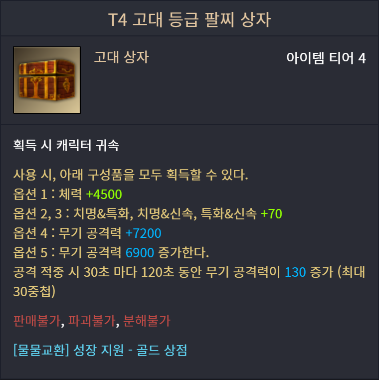
골드 상점에서 팔찌를 구매할 수 있는데 뉴비에게 굉장히 좋은편입니다.
구매해서 사용하다가 특성2줄 + 특옵2줄 정도 노리면서 깎아보시는걸 추천드립니다.
팔찌 효율은 인게임내에서 전투력을 비교하여 알 수 있는데 사실 인게임 전투력은 옵션별 가중치가 정확하지 않아서 잘 사용하지 않고 외부 사이트들을 사용합니다.
이런 외부 사이트 들에서 팔찌 효율을 확인 가능한데 같은 팔찌라도 사이트별로 효율이 다르게 나오는 경우가 있습니다.
사이트별로 옵션별 가중치를 다르게 둬서 생기는 문제인데 사실 어디가 정확하다 얘기할 수 없는 부분이라 그냥 참고만 하시면 되겠습니다.
카르마
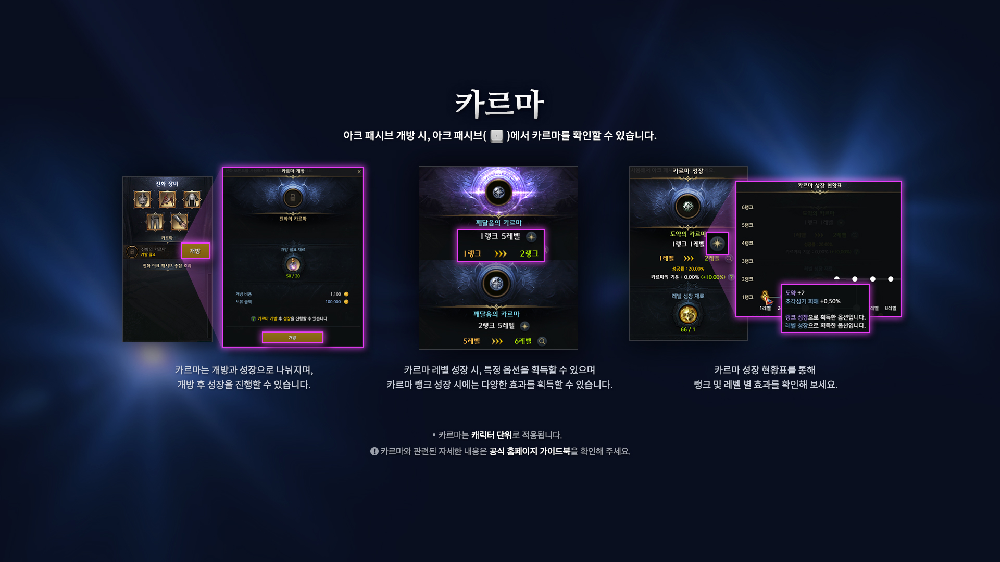
카르마는 2막 클리어 후 개방 가능한 시스템으로 아크 패시브와 관련된 효과를 강화할 수 있습니다.
랭크 성장과 레벨 성장으로 나뉘며 각 아크 패시브 타입에 따라 강화 효과가 달라집니다.
진화 / 깨달음 / 도약으로 나뉘며 각각 성장 시 강화 효과는 다음과 같습니다.
| 타입 | 설명 |
|---|---|
| 진화 | - 랭크 성장 : 진화형 피해, 낙인력 증가 - 레벨 성장 : 최대 생명력 증가 |
| 깨달음 | - 랭크 성장 : 깨달음 포인트 획득 - 레벨 성장 : 무기 공격력 증가 |
| 도약 | - 랭크 성장 : 도약 포인트 획득 - 레벨 성장 : 초각성기 피해 증가 |
진화와 도약은 랭크 성장이 중요하며 깨달음은 랭크 성장과 레벨성장 둘 다 중요합니다.
랭크는 최대 6랭크, 레벨은 최대 30레벨까지 가능한데 진화와 도약의 경우 21 레벨 이상은 큰 의미가 없기 때문에 6랭크 21레벨만 달성하고 다른 스펙업을 하는게 좋습니다.
깨달음의 경우 6랭크 21레벨 이후 레벨 1업당 무기 공격력 0.1%가 상승하는데 26레벨까지는 카르마의 기운(카기백)이 있어서 할만합니다.
그 이상은 고인물의 영역으로 골드를 때려 박아야 하는데
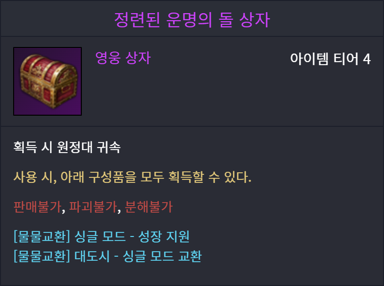
지옥에서 얻을 수 있게된 정련된 운명의돌이 있습니다.
특수 재련 재료와 비슷한데 무료로 강화 시도를 할 수 있는 대신 카르마의 기운은 오르지 않습니다.
지옥 보상에서 선택지로 나온다면 고려해볼만한 보상입니다.
아크 그리드
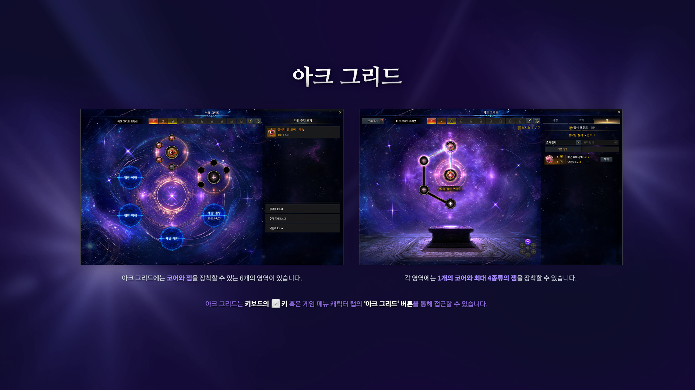
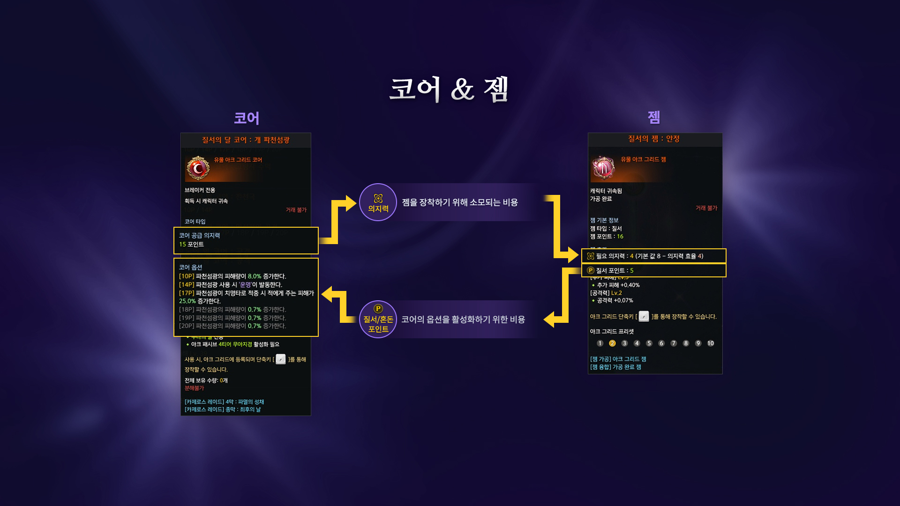
아크 그리드는 코어와 젬을 장착 및 조합하여 다양한 효과를 얻을 수 있는 성장 시스템입니다.
아크 그리드에 구조개선을 포함한 다양한 옵션들이 있기 때문에 아크 그리드 전/후로 캐릭터가 완전히 달라지는 경우가 많습니다.
의지력과 포인트
아크 그리드는 코어가 공급하는 의지력으로 젬을 켜고, 젬이 제공하는 포인트로 코어 효과를 개방하는 연계 시스템입니다.
의지력
코어를 장착하면 젬을 켤 수 있는 '의지력'이 공급됩니다.
- 각 젬은 활성화에 필요한 필요 의지력을 가지고 있습니다.
- 코어와 가까운 젬부터 순서대로 의지력이 전달됩니다.
- 코어 등급(전설/유물/고대)이 높을수록 의지력이 많아져 더 많은 젬을 동시에 활성화할 수 있습니다.
질서 / 혼돈 포인트
의지력을 통해 활성화된 젬들이 코어에게 전달하는 '합산 점수'입니다.
- 활성화된 젬들의 포인트 합계가 특정 구간(10 / 14 / 17 / 18 / 19 / 20 포인트)에 도달할 때마다 코어의 핵심 효과가 단계별로 개방됩니다.
- 젬을 높게 가공할수록 더 높은 코어 효과를 활성화할 수 있습니다.
코어
코어는 클래스별 고유 효과를 지는 질서 코어와 모든 클래스가 같은 효과를 받는 혼돈 코어로 나뉩니다.
질서 코어는 해/달/별 3가지 종류로 나뉘고 각각 직업각인별로 3종류가 존재합니다.
해달별이 각각 3 종류기 때문에 총 27가지 조합이 가능하지만 실제로는 성능이 좋지않은 코어들이 많아서 몇가지 조합만 실전에서 사용하는 편입니다.
직업별로 사용되는 코어 조합이 다르기 때문에 직접 알아보고 사용할 조합을 선택하셔야 합니다.
혼돈 코어 역시 해/달/별 3가지로 나뉘고 각각 6종류의 코어가 존재합니다.
혼돈 코어는 효율이 가장 좋은 조합이 고정되어 있습니다.
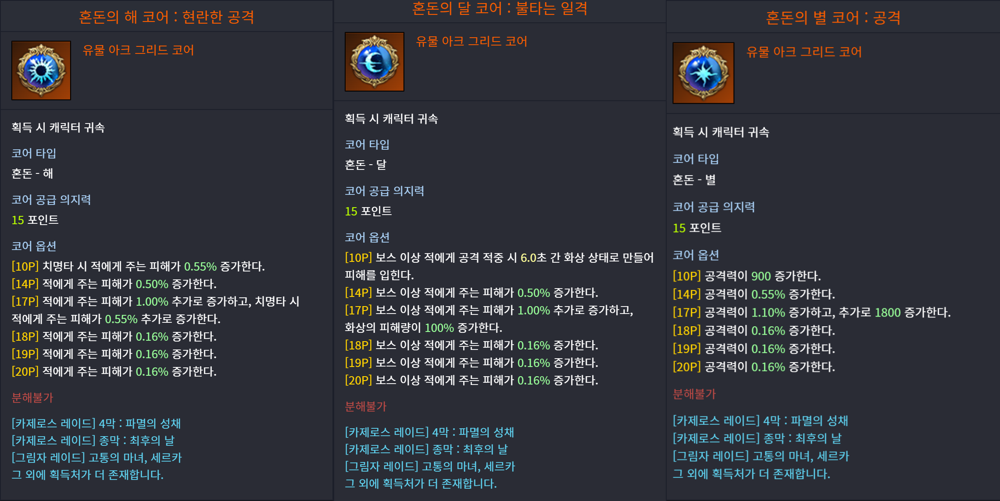
딜러는 현란한 공격(해) / 불타는 일격(달) / 공격(별)
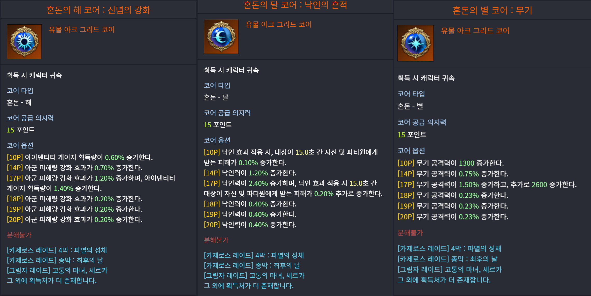
서포터는 신념의 강화(해) / 낙인의 흔적(달) / 무기(별)
저 혼돈 코어들이 없다면 차선책으로 다른 코어를 낄 수는 있지만 성능이 저 코어들에 비해 좋지 않기 때문에 결국에는 저 코어들을 맞추셔야 합니다.
코어는 랜덤으로 드랍되기 때문에 본인이 원한다고 세팅을 할 수 있는건 아닙니다.
원하는 고대 코어를 확정으로 얻을 방법은 지평의 성당 보상으로 얻을 수 있는 고대 코어 선택 상자 뿐인데 캐릭터별로 1회만 구매 가능하기 때문에 모든 코어를 고대로 세팅하는건 운이 많이 필요합니다.
우선은 코어 정수 모아서 유물 등급을 다 맞추는걸 목표로 하시면 됩니다.
111? 222? 333 ?
직업별 공략을 보다보면 111, 222, 221 이런식으로 코어조합을 숫자로 표시하는게 있습니다.
이건 아크 그리드 창에서 나오는 코어를 위쪽부터 순서대로 번호를 붙여서 부르기 편하게 만든 방식입니다.
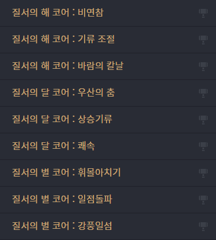
예를들어 위의 사진은 기상술사의 코어 표인데 질풍 기상술사의 경우
비연참(1)/우산의 춤(1)/휘몰아치기(1)를 사용하는 111 빌드
기류 조절(2)/상승기류(2)/휘몰아치기(1)를 사용하는 221 빌드
바람의 칼날(3)/쾌속(3)/강풍일섬(3)을 사용하는 333빌드가 있습니다
젬
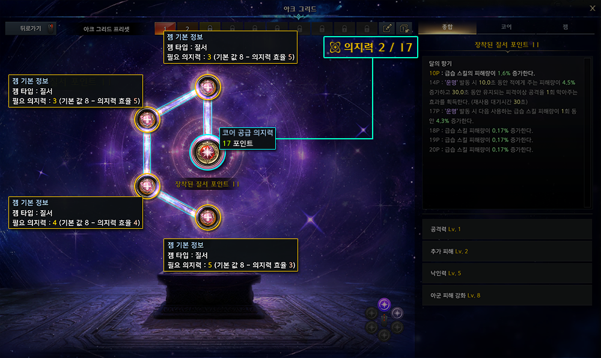
젬은 코어에 착용하는 아이템으로 젬의 포인트에 따라 코어 옵션이 활성화됩니다.
젬 옵션은 의지력 효율, 질서/혼돈 포인트, 딜러 옵션(공격력,추가피해,보스피해), 서포터 옵션(낙인력,아군피해강화,아군공격강화)으로 나뉩니다.
기본적으로 의지력 효율, 질서/혼돈 포인트는 고정이고 나머지 2자리를 딜러 옵션과 서포터 옵션중에 랜덤으로 2가지가 정해집니다.
젬 가공 시 랜덤으로 주어지는 4개의 선택지 중에서 1개씩 선택해서 옵션 수치가 바뀌거나 옵션 자체가 다른 종류로 변하거나 합니다.
젬 가공의 목표는 의지력 효율, 질서/혼돈 포인트를 최대로 하는걸 최우선으로 하고 남은 2자리에 본인 캐릭터에 맞는 옵션 수치를 올리는걸 나중으로 하게 됩니다.
젬의 옵션보다 코어의 활성화 옵션이 훨씬 성능이 좋기 때문에 코어 활성화를 위해 의지력 효율, 질서/혼돈 포인트를 최우선으로 하고 이후에 코어 활성화가 다 되었다면 그때 나머지 옵션을 올리면 되겠습니다.
발사대
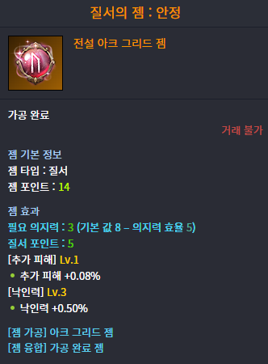
코어 17포인트 활성화를 위해 의지력과 질서/혼돈 포인트만 최대한 높인 젬을 발사대라고 합니다.
사진의 젬은 의지력 효율 5 / 질서 포인트 5 만 맞춘 젬으로 저런걸 발사대라고 합니다.
발사대는 많은 골드가 들지 않지만 유효 옵션만으로 젬옵션을 도배하는 세팅은 매우 많은 골드가 들어갑니다.
특히 보스 피해/아군 공격 강화 옵션을 위해서 젬을 깎는 경우 매우 많은 골드가 필요합니다.
뉴비들은 부가 옵션보다는 코어 활성화가 우선이니 발사대를 띄워서 코어 17포인트를 활성화하는걸 목표로 젬을 깎는걸 추천드립니다.
안정침식 / 견고왜곡 / 불변붕괴
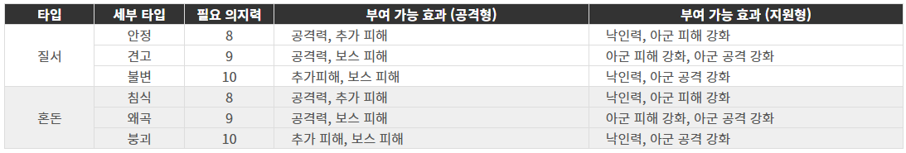
코어를 다 활성화한 후에는 젬 부가 옵션을 올리는걸 목표로 하는데 부가 옵션 중 보스피해/아군공격강화의 성능이 다른 옵션들보다 좋기 때문에 이걸 노리고 젬 가공을 시도하게 됩니다.
보통 이걸 '보피작' 이라고 합니다.
표에서 보면 안정/침식은 보스피해/아군공격강화 옵션이 나오지 않습니다. 대신 기본 필요 의지력이 8이기 때문에 보피작은 불가능하지만 발사대를 깎기 위해서는 좋습니다.
견고/왜곡부터 보피/아공강이 나오는데 공격력/낙인력 보다 추가피해/아피강이 성능이 더 좋기 때문에 보피작을 할 때 불변/붕괴를 많이 깎습니다.
하지만 불변/붕괴는 기본 필요 의지력이 10이기 때문에 발사대로 사용하기 어렵습니다. 그러니 뉴비들은 가능하다면 안정/침식 위주로 깎아서 발사대를 먼저 완성하시는게 좋습니다.
➡️ 아크 그리드 사이트 아크 그리드 관련 외부 사이트입니다. 잼을 깎거나 착용할 때 도움을 받을 수 있는 사이트들입니다.
젬 자동 장착
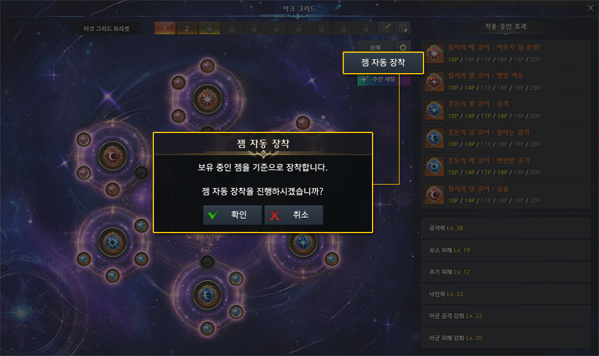
젬 자동 장착 기능을 사용해 자동으로 젬 세팅을 할 수 있습니다.
하지만 전투력을 기준으로 젬을 장착하기 때문에 찐빠가 많이 납니다.
젬이 제대로 깎이지 않은 상태에서 사용한다면 하나의 코어에 젬이 몰리는 현상이 있어서 사용해보고 제대로 코어 옵션들이 활성화 되지 않는다면 외부 사이트를 사용해보시는걸 추천드립니다.
완갑
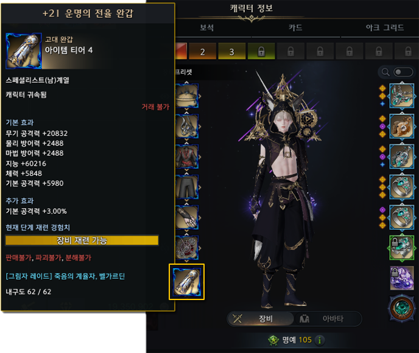
완갑은 벨가르딘 레이드에서 얻을 수 있는 장비 아이템으로 일반 장비와 마찬가지로 재련을 통해 강화를 할 수 있습니다.
아이템 레벨에는 영향을 주지 않으며 재련 효율이 매우 높기 때문에 매우 추천하는 스펙업 요소입니다.
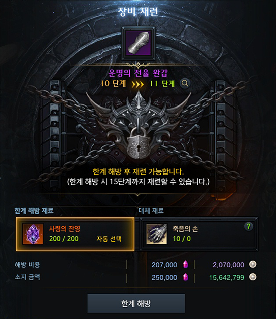
벨가르딘 레이드 클리어시 영웅 등급 완갑을 획득할 수 있으며 클리어 보상으로 얻는 재료들을 사용한 한계 해방을 통해 최대 재련 단계를 올릴 수 있습니다.
| 완갑 등급 | 재련 가능 단계 | 한계 해방을 통한 등급 상승 | 해방 재료 |
|---|---|---|---|
| 영웅 | 재련 전 ~ 최대 10단계 | • 10단계 해방 시 전설 등급으로 상승 | • 사령의 잔영 x 200 또는 죽음의 손 x 100 |
| 전설 | 10단계 ~ 최대 15단계 | • 15단계에서 해방 시 유물 등급으로 상승 | • 사령의 잔영 x 240 또는 죽음의 손 x 120 |
| 유물 | 15단계 ~ 최대 20단계 | • 20단계에서 해방 시 고대 등급으로 상승 | • 죽음의 손 x 150 |
| 고대 | 20단계 ~ 최대 25단계 | - | - |
노말 난이도는 15단계까지 해방이 가능하고 20단계 이후는 하드 난이도를 클리어해야 가능합니다.
전설 아바타
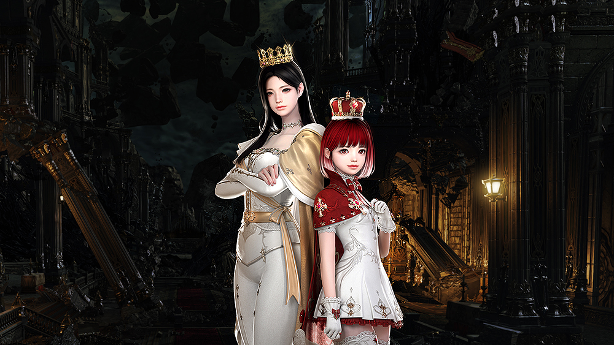
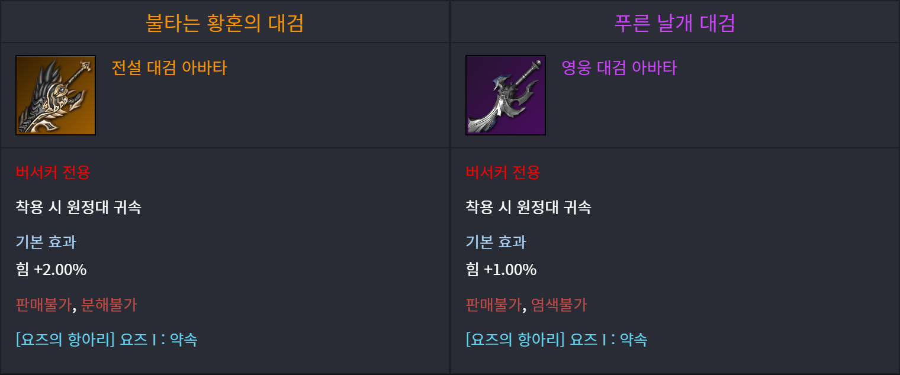
전설 아바타는 부위당 스탯 2%의 옵션을 갖고 있는데 영웅 아바타는 부위당 스탯 1%입니다.
머리, 상의, 하의, 무기 총 4부위를 착용하니까 최대 4%의 스탯을 추가로 얻을 수 있습니다.
효율이 좋은 편이기 때문에 가능하다면 맞춰주시는게 좋습니다.
요즈의 항아리를 사용해 직접 만들수도 있지만 확률이 10%라 추천은 안합니다.